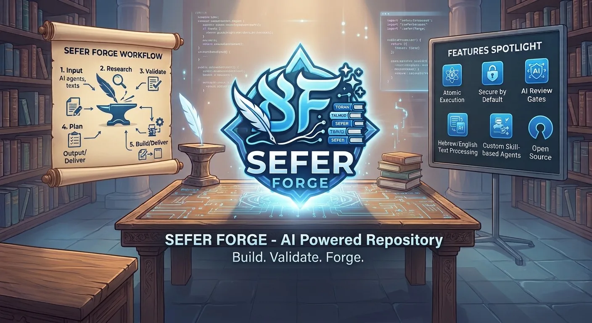
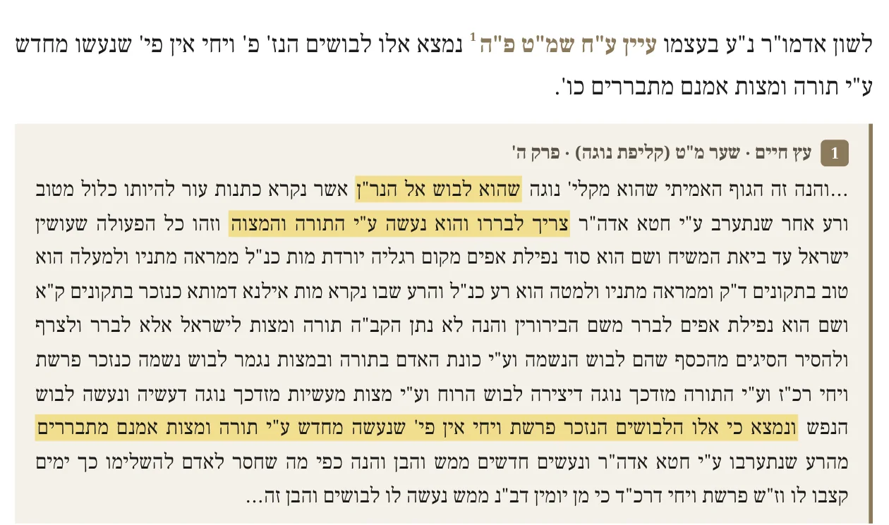

How it is made
For those who want the details: the process behind every page, the trail each lesson leaves, and the tools. Everything is open on GitHub.

How it is made
From a recorded lesson to a printed page
The teacher's lessons go through a process built to keep every printed word faithful to the text and to what was said. A teacher learns a text and explains it aloud. Sefer Forge turns the recording into a publication in which every page carries a passage of the original on top and the teacher's explanation of it below: faithful to what was said, and written to be read.
-
Take in the text
Photograph the pages of a sefer, or paste the text from a digital edition. The agent reads each photo in strips at full resolution, counts the lines and reads everything a second time; what it cannot read is flagged, never guessed.
ocr.md -
Set out its sources
Before recording, a reading pack sets every source the text cites under its citation: the passage from Etz Chaim or Pri Etz Chaim with the lines before and after, the words it refers to highlighted, quoted exactly from the texts kept in the repository.
references.yamlreading pack (PDF)
From the sample's reading pack: the text, citation 1, and the passage it points to. -
Record the explanation
The teacher reads the text aloud and explains it, in Hebrew, one note at a time, on a phone. Photos and recordings stay on the home machine: they are never committed or uploaded.
voicenotes/ -
Transcribe, locally
ivrit.ai's Hebrew Whisper (large-v3) runs on the home GPU, in about 0.9× the recording's length, saving as it goes so a crash loses nothing. A shared glossary corrects the mis-hearings that recur.
.raw.txt.timed.txtwhisper-fixes.yaml -
Match and clean
The transcript is matched against the printed words the speaker read aloud, which corrects both. It is cleaned only where the repository holds evidence (the text, the glossary, a verse being quoted). A doubtful word keeps its time so the author can listen again, and a report lists every word that changed.
ocr-match.mdcommentary.mdreview.md -
Pair text and explanation
A short plan cuts the text where its explanation begins, and the page is built from the plan: the passage on top, the explanation below.
section-plan.yamlsection.md -
Make it read as writing
Three passes, each kept as a list of changes that can be undone: readability (garbled words), style (spoken Hebrew made written) and teaching (the lesson rewritten as a commentary on the text, about half the length). The faithful transcript stays beside them, and the quoted readings never change.
edits:style:teaching:teaching-notes.md -
Print, proof, accept
A session prints as an A5 pamphlet; discourses gather into chapters and books (Word, through pandoc). Every PDF is proofed for fonts, colours, margins, stray markup, stranded headings and page numbers, then reviewed page by page, before it reaches the author for acceptance.
pamphlet (PDF)book (DOCX)proof-pdf.py
A lesson and its trail
Behind the pages: the trail of note א
In the teacher's lessons, every step leaves a file in the repository, so any sentence on the page can be traced back to the recording.
references.yamlthe reading pack's plan: each citation and its passage
ocr.mdthe note's stretch of the text, and its Etz Chaim passage
voicenotes/Whisper's transcript, plain and timed (the audio stays home)
ocr-match.mdwhich printed words were read aloud, and when
commentary.mdthe faithful transcript, with its passes listed above it
review.mdevery word changed against Whisper
section-plan.yamlwhere the text is cut, and what each explanation covers
teaching-notes.mdthe note understood in writing before it is rewritten
section.teaching.mdthe page as it prints
For technologists: an AI agent does the work, the repository keeps it honest
The work is done by Claude Code acting as an agent. The author names a goal (“new session”, “ingest session 3”, “teaching pass”, “proof the pamphlet”) and the agent carries out every step. It reads the photos, runs the scripts, writes the files, checks its own work, rebuilds, and reports what needs the author. Everything it knows lives in the repository, not in a chat, so every session starts from the same rules.
CLAUDE.md
What may never be edited, the file formats, and which skill answers which request.
prompts/
The full steps for each kind of session, the transcript review rules, and the readability, style and teaching passes.
.claude/skills/
Eighteen skills, one per workflow: new-session,
ocr-session, ingest-session,
references-pack, teaching-pass,
proof-pdf, build-book…
scripts/
The deterministic work (transcription, OCR strips, matching, building, printing, status), so the agent runs tools instead of improvising.
.claude/settings.json
After every edit of a session file a hook runs
check-session.py; an error goes straight back to the agent
before it moves on.
proof-pdf.py
Every PDF is held to docs/print-standard.md, then reviewed
spread by spread, before anyone is asked to accept it.
You say, the agent does
| “new session” + files | makes the session, starts Whisper in the background, begins the OCR |
|---|---|
| “references” | sets out every cited source as a reading pack |
| “ingest session” | OCR, match, clean, pair, the three passes, the pamphlet and its proof |
| “status” | where every session stands, and its next step |
| “assemble discourse”, “build book” | joins the sessions, places the chapter, renders the book |
| “grow the glossary” | proposes Whisper fixes from corrections made again and again |
Evidence, not invention
sessions/002/review.md (from the sample)
Whisper 887 words · cleaned 883 · replaced 32 · added 0
שעמם ט← שער מ"טכותנות← כתנותויבשם כותנות← וילבשם כתנות
Every word of the cleaned transcript traces back to what Whisper heard. A word added without a rule is an error, and the check reports it.
Where the author decides
- accepting a PDF;
- replacing a source of truth (a raw transcript, a finished OCR);
- overwriting hand-edited text;
- a change that would alter the argument;
- anything that leaves the machine or cannot be undone: merging, deleting, publishing.
Built to resume
Long steps run in the background. Every workflow picks up where it
stopped, after a crash, a restart or a week away:
session-status.py names each session's next step. Each
piece of work goes on a branch and reaches main through a
pull request.
From agentic to autonomous
- Assistedthe author, step by step
- Agentic sessionsname the goal; the agent runs the workflowtoday
- Event-drivena new recording starts its own session
- Scheduleda recurring run advances every mechanical step
- Autonomous, with gatesone pull request per piece; the author reviews and accepts
Learn more
Everything is open
The code, the rules the agent follows, and the files of every session are at github.com/Esoterics611/sefer-forge.
Start here
READMEthe process at a glance, quick start Setup guidewhat you need, and the daily workflow Visionwhy it is local-first, and where it is goingThe process in depth
Ingesting a sessionthe procedure, step by step Transcript review ruleswhat may be corrected, and on what evidence The teaching passfrom a lesson to a written commentary Print standardthe finished page, and the proofThe AI workflow
Agentic developmenthow the agent works, and the road to autonomy CLAUDE.mdthe rules every session follows Skillsone per workflow Hooksthe check after every editThe sample and the code
The sample's folderits sessions, discourse and notes The pamphlet (PDF)The garments of the soul explained note by note, A5, 24 pages The reading pack (PDF)its 26 citations of Etz Chaim and Pri Etz Chaim, A4, 13 pages The class handout (PDF)The garments of the soul, 4 pages scripts/transcription, matching, building, proofing The publishing toolscripts/youtube-publish.pySupport the work
Dedicate a part of it, in honor of someone or l'ilui nishmat a loved one.
Write to us Back to the home page